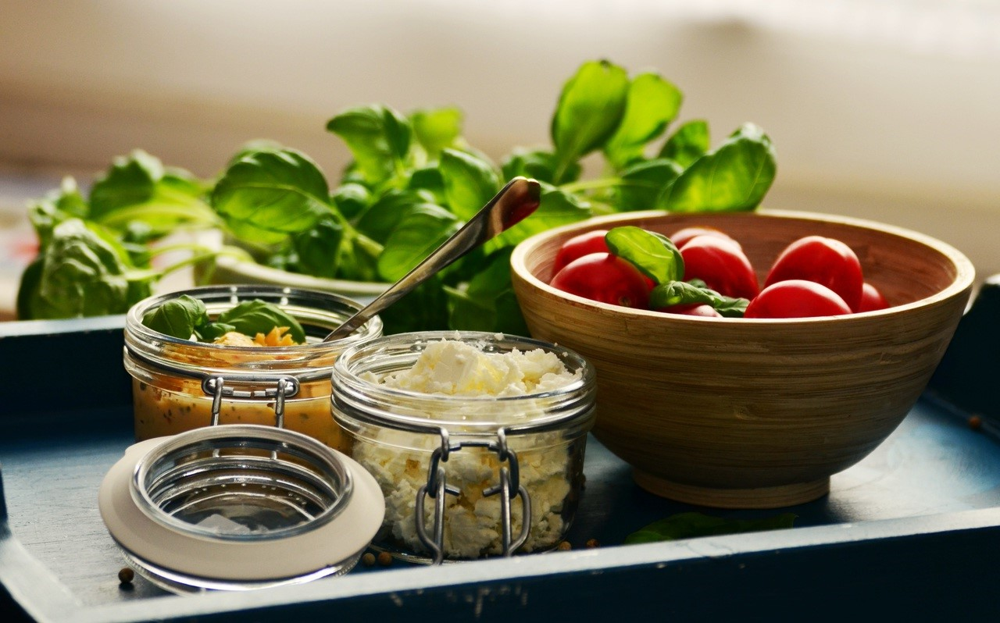

<section class="page-section clearfix">
    <div class="container">
      <div class="intro">
        
        <div class="intro-text left-0 text-center bg-faded p-5 rounded">
          <h2 class="section-heading mb-4">
            <span class="section-heading-upper">Delicious Recipes</span>
            <span class="section-heading-lower">From Your Kitchen</span>
          </h2>
          <p class="mb-3">
            Cooking is hard when you don't know what you're doing. You 
            probably went shopping a while ago &amp; bought a bunch of food you know is 
            going bad, but you don't know what to do with any of it. Allow this app
            to help. Here, you can put together a list the food you have &amp; find recipes
            to make.
            
          </p>
          <div class="intro-button mx-auto">
            <a class="btn btn-primary btn-xl" routerLink="/categories">Get Started!</a>
          </div>
        </div>
      </div>
    </div>
  </section>